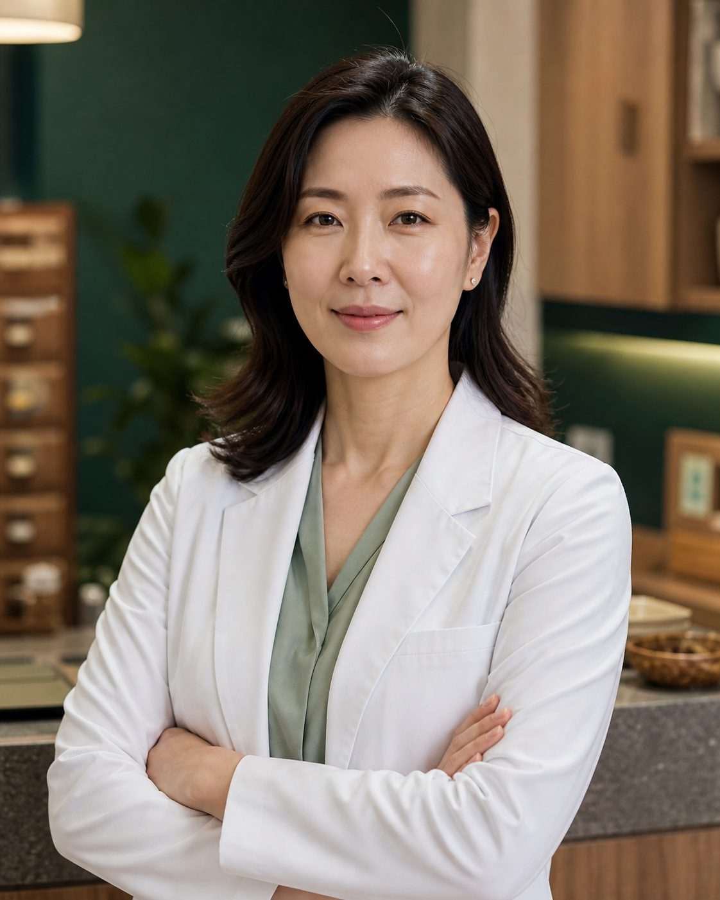

대표원장 · 한의사정서윤
Jung Seo-yun, K.M.D.대표원장 · 체질 한약 · 여성·소화기 진료
“잠이 부족한 사람에게 같은 처방을 쓰지 않습니다.
진찰표에 그 사람의 하루가 먼저 적혀야 합니다.”
약력
- 2001경희대학교 한의과대학 졸업
- 2004단아한 한의원 개원 (현 도산대로)
- 2009대한한방내과학회 정회원 · 학술 활동
- 2016사상체질의학회 정회원
- 2021대한한방부인과학회 갱년기 진료 연수
주요 진료
체질 진단소화기 한약갱년기 관리산후 회복공진단·경옥고